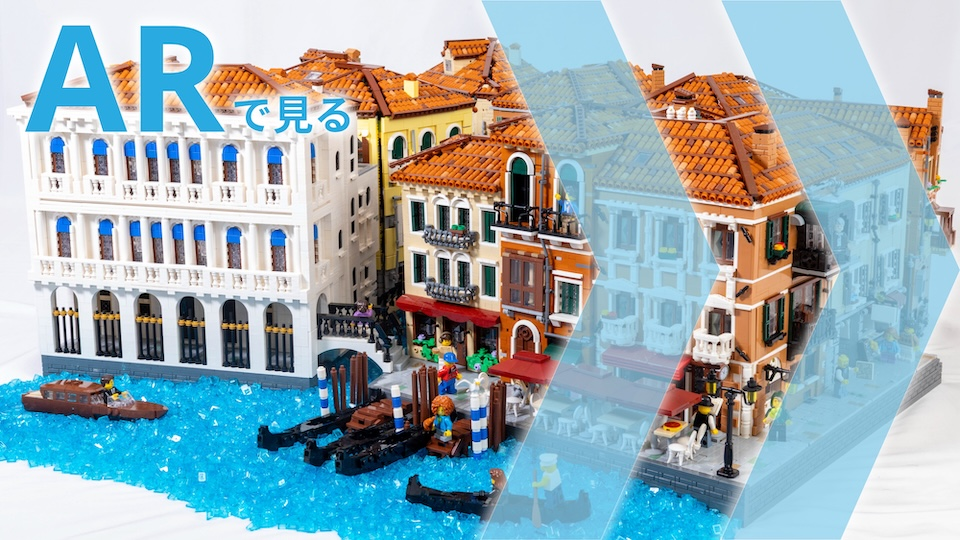

Venice
かつて地中海貿易によって栄え、1000年以上続いたヴェネツィア共和国。ゴンドラで行き来するための運河が張り巡らされた街並みは息を呑む美しさです。

【新作公開！】レゴで水の都・ヴェネツィアを作りました！運河が張り巡らされた美しい街並みを再現しています延べ1000時間をかけた、5万ピースの超大作です！@mol_lego @autumn_765 @tsuki_lego @maru__nd の4人で制作しました11/22~24の駒場祭で展示しますぜひお越しください！ pic.twitter.com/qPKD2z7uAd— mol (@mol_lego) November 21, 2025
【新作公開！】レゴで水の都・ヴェネツィアを作りました！運河が張り巡らされた美しい街並みを再現しています延べ1000時間をかけた、5万ピースの超大作です！@mol_lego @autumn_765 @tsuki_lego @maru__nd の4人で制作しました11/22~24の駒場祭で展示しますぜひお越しください！ pic.twitter.com/qPKD2z7uAd